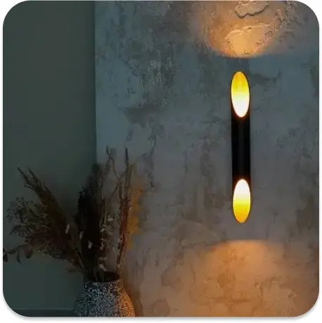

Дизайн освітлення є фундаментальною дисципліною, яка закладає основи художнього зображення та розвиває професійні навички у майбутніх дизайнерів, художників і архітекторів. Основною метою цього курсу є формування у студентів здатності аналізувати форми, передавати їх об’єм, текстуру, кольорову гармонію, а також розвивати вміння відображати просторове середовище у двовимірному форматі.
Дисципліна охоплює широкий спектр завдань. Вона спрямована на розвиток у студентів вміння передавати об’єкти, використовуючи світло, тінь та кольорові градації, а також навчання основам гармонійного поєднання кольорів і створення композицій.

Студенти опановують техніки нанесення фарби, роботу з мазками, шарами та іншими художніми прийомами. Велика увага приділяється розумінню впливу освітлення на сприйняття кольору, об’єму та текстури, що є важливим для професійної діяльності. Програма курсу включає вивчення базових теоретичних і практичних тем. Студенти починають із засвоєння основ композиції, знайомляться з матеріалами та інструментами, такими як акрил, олія, акварель, пастель, та вчаться організовувати свій робочий простір. Особлива увага приділяється теорії кольору, вивченню його властивостей, роботі з кольоровими колами, хроматичними та ахроматичними відтінками. Практичні завдання включають створення етюдів геометричних форм, натюрмортів, пейзажів, портретів і фігуративних композицій, що дозволяє студентам поступово опановувати складніші завдання.
Важливе місце у навчанні займає практика малювання з натури, що дає змогу глибше зрозуміти об’єм, пропорції та перспективу. Робота з натюрмортами допомагає вивчати передачу текстури різних матеріалів, таких як метал, скло, тканина, дерево. Пейзажний живопис знайомить студентів із принципами передачі природного середовища, зокрема перспективи, повітряної глибини та особливостей освітлення. Малювання портретів і фігур вчить передавати не тільки зовнішню схожість, але й характер, емоції та внутрішній стан моделей. Методи викладання дисципліни поєднують теоретичні лекції, практичні заняття, індивідуальні консультації та групові обговорення. Лекції знайомлять студентів з історією живопису, принципами анатомії та основами колористики. Практичні заняття спрямовані на створення художніх робіт, виконання етюдів і проектів. Консультації дозволяють викладачам допомагати студентам вдосконалювати їхні техніки, а групові обговорення сприяють обміну досвідом і критичному аналізу виконаних робіт.
Для реалізації практичної частини використовуються різні поверхні, такі як полотно, папір чи дерев'яні панелі, а також різноманітні техніки, включаючи лессування, імпасто, змішану техніку. Особлива увага приділяється експериментальним методам, що дозволяють поєднувати традиційні підходи із сучасними тенденціями мистецтва.
Критерії оцінювання враховують якість передачі об’єму, пропорцій, композиції та кольору, а також рівень технічної майстерності, оригінальності та завершеності робіт. Дизайн освітлення закладає основу для практичного застосування в багатьох галузях дизайну, таких як графічний дизайн, ілюстрація, сценографія, створення інтер’єрів. Вивчення цієї дисципліни формує у студентів художній смак, розвиває естетичне мислення та забезпечує базові знання, необхідні для подальшого професійного зростання.